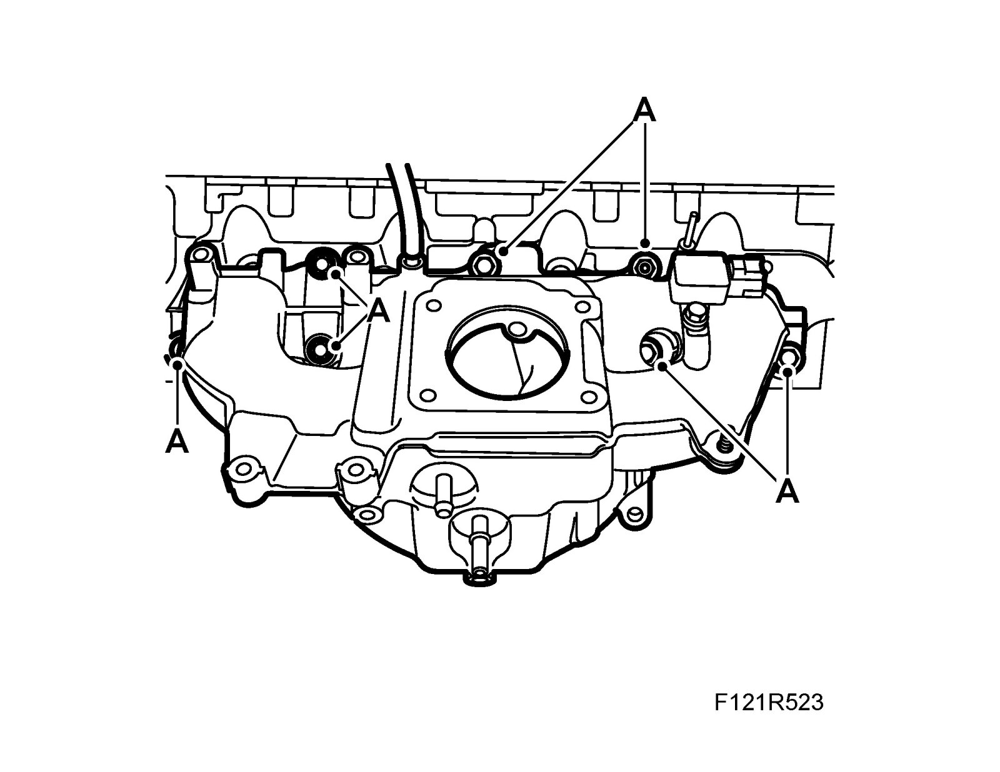
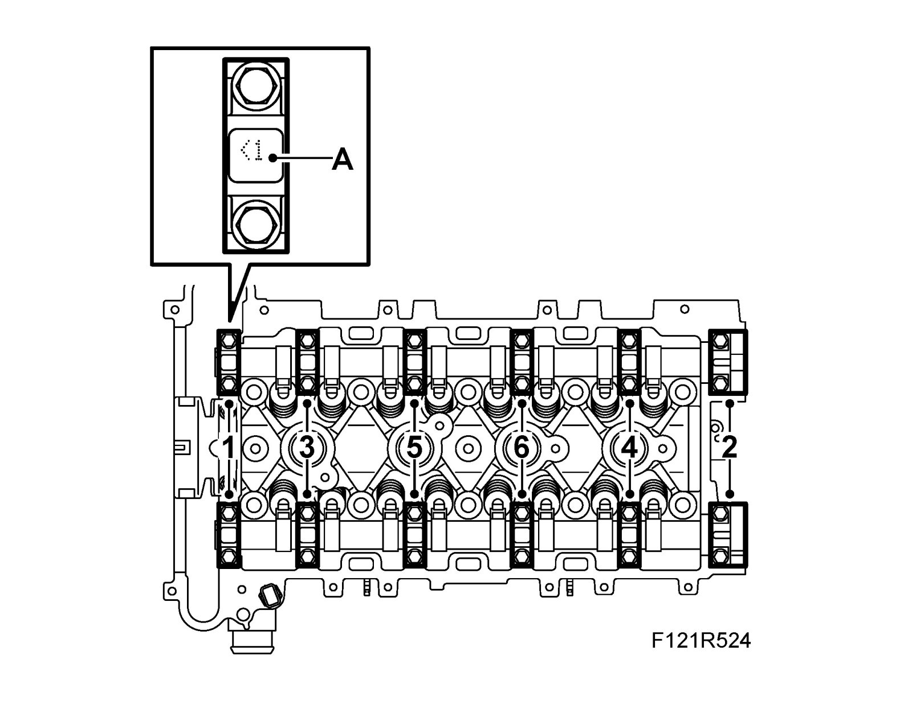
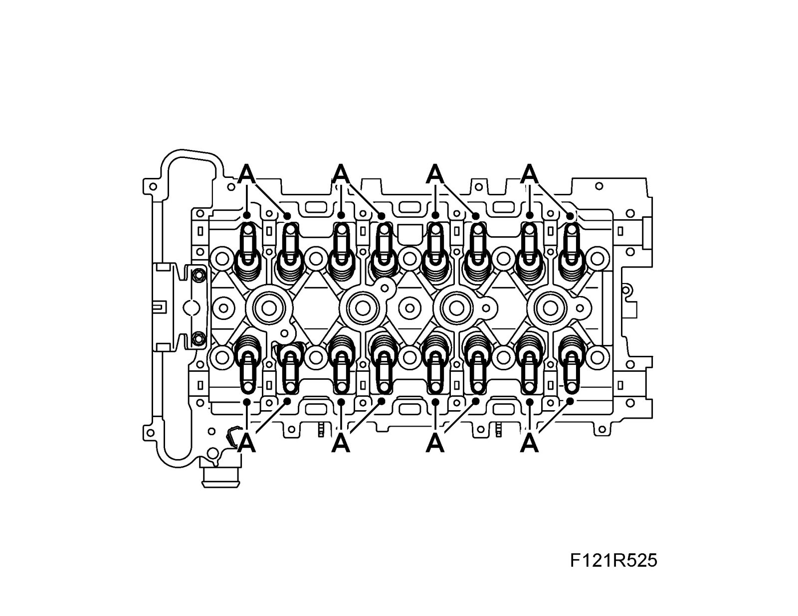
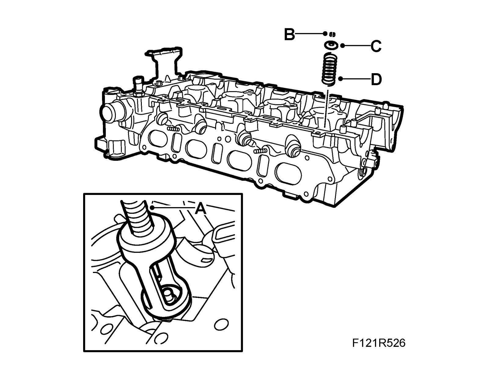
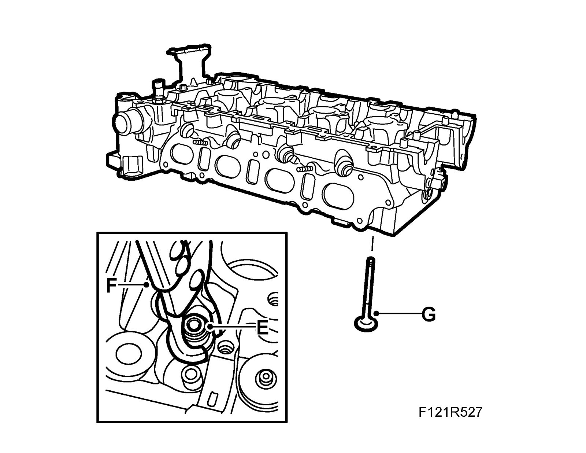
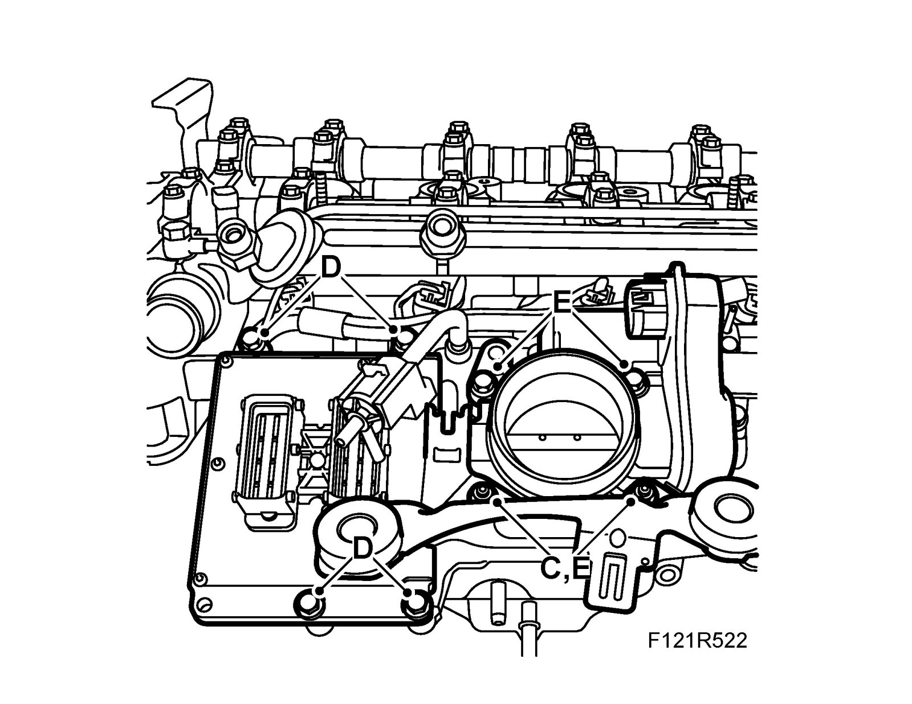
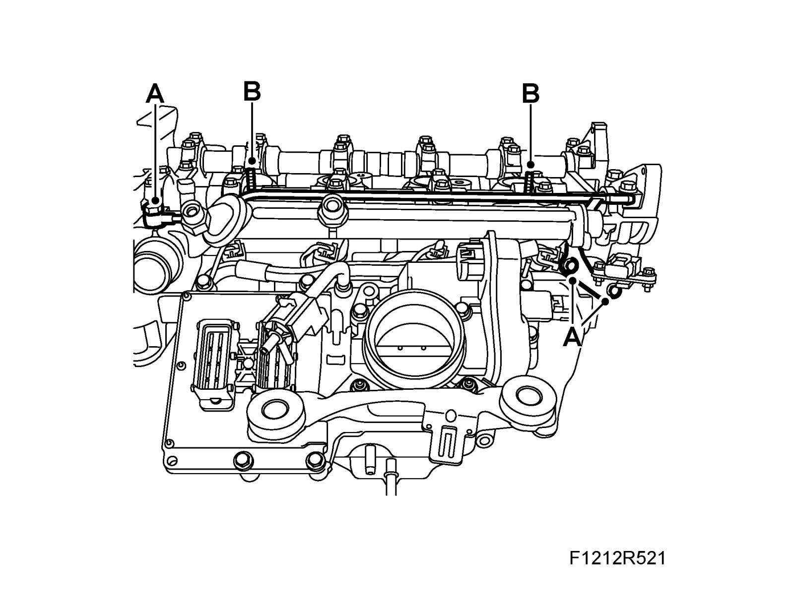
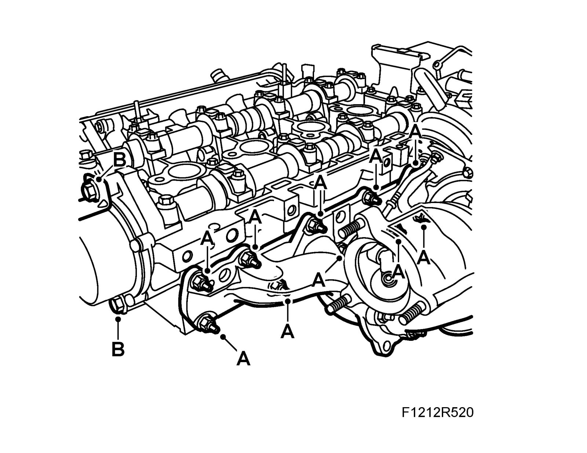

Valve: Service and Repair
Intake valves and exhaust valvesTo remove
1. Remove the cylinder head.
2. Remove the exhaust manifold (A).

3. Remove the vacuum pump (B).
4. Remove the ventilation pipe (A).

5. Remove the fuel rail (B).
6. Remove the bracket (C).

7. Remove the control module (D).
8. Remove the throttle body (E).
9. Remove the intake manifold (A).

10. Slacken the camshaft bearing caps evenly in the indicated order. Carefully detach the camshaft guide bearings with a rubber mallet.

11. Note the bearing cap designations (A)
12. Lift away the camshafts.
13. Remove the roller rockers (A). Store them in 83 93 787 Valve stand so they do not get mixed up.

14. Compress the valve spring with 83 96 384 Valve spring tool (A) and remove the valve cone (B), spring plate (C) and valve spring (D).

15. Remove the valve guide seal (E) using 83 94 157 Pliers, valve guide seal (F).

16. Remove the valve (G).
To fit
1. Fit the valve (G).
2. Fit a valve guide seal (E) using 83 94 157 Pliers, valve guide seal (F).
3. Fit the valve spring (D) and valve head (C). Compress the valve spring using 83 96 384 Valve spring tool and fit the valve cone (B).

4. Fit the roller rockers (A).

5. Lift in the camshafts.
6. Note the bearing cap designations (A).

7. Tighten the camshaft bearing caps in the specified order.
8. Fit the intake manifold (A).

9. Fit the throttle body (E).

10. Fit the control module (D).
11. Fit the bracket (C).
12. Fit the fuel rail (B).

13. Fit the ventilation pipe (A).
14. Fit the vacuum pump (B).

15. Fit the exhaust manifold (A).
16. Fit the Cylinder head.